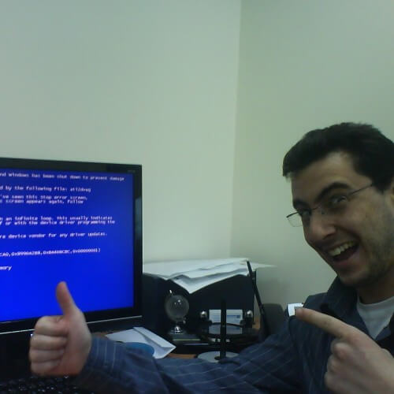
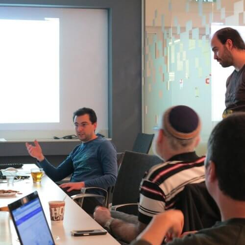

A bit about myself
Hi! I'm Itai Bar-Haim.
I'm a Client-Oriented kind of guy, most of my experience is writing UI in various technologies (started with X-Motif, then GTK, QT, WinForms, WPF, Web, Some Android).
Writing UI code gave me deep understanding of thread management, performance, and the importance of responsiveness. Also I had to handle a lot of different methods of user input and respond accordingly. UI libraries also have their share of memory issues (handles in Windows, for example), which I learnt how to tackle.
After doing UI in the deep levels for so many years, server side is easy :-)
I'm a fast learner, self-taught. If I want to learn something new, I just start a project with it. It also goes the other way around - if I need to do something using a technology I'm not familiar with, I just learn it "on-the-fly".
I have the attitude of "Get-Things-Done-Right". This means that while I do get things done, I always try to do them the right way. In software this usually means I try to think ahead to allow room for future changes and adaptations.
I am currently unemployed (or "between jobs", "searching-for-my-next-challenge", you get the idea). The last placed I worked at was Applitools (AI powered UI Testing), where I had the roles of DotNet SDK developer, DotNet backend developer, and web-based plugins developer for Azure and Figma plugins.
Projects
- NBidi, A .Net implementation of the BIDI (Bi-Directional Text) algorithm.
- WebQuestEngine, Point and Click Quest Game Engine for Web
- Blender Rotoscope, Interactive video matte generation through an external AI worker.

Some links
- My Blog, where I write mostly about technology and share my thoughts.
- My GitHub page
- My Stack-Overflow profile page
- My Linked-in profile page
- My old SourceForge page

Presentations and Publications
- Efficient Web Page Authoring - a presentation I passed to my collegues at PicScout to improve their understanding of web-related concepts and how to do things better.
- Web Development for Beginners - a presentation aiming to teach the basics of web development to people with basic programming background. Was done as part of a volunteering project in PicScout.
- My post about Jasmine JavaScript Unit Testing Framework in the PicScout engineering blog.

Personal Life
Married to Nadin and father to Ella and Gali.
When I have time I like (surprise surprise!) programming (my own projects), going to Escape Rooms with my wife or with friends, and when I have a good quest game I like solving it.